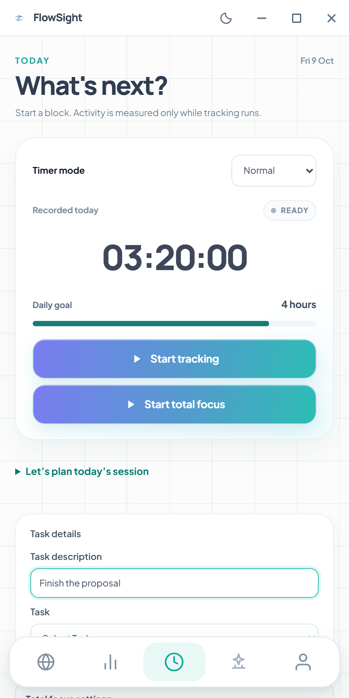

Manuel Castillejo — creator of FlowSight
I build FlowSight, a desktop application for understanding the shape of digital work through local AI. The official product website is flowsight.site.
FlowSight
Read the FlowSight project note
FlowSight turns work context analyzed on a person's device into reviewable summaries and patterns of focus, meetings and interruptions. Optional team capabilities use selected summaries and aggregate signals. The product distinguishes local analysis from connected features that need their own data-flow review.
The project asks a practical question: how can people understand working conditions and communicate outcomes while keeping detailed context close to the person doing the work? A summary provides information to review alongside tasks, evidence and human judgment.

Explore the official app overview · Inspect the published source · FlowSight Individual
Published recognition
On 10 June 2026, the University of Seville's engineering school named FlowSight and Manuel Castillejo Vela in its report on the XXI Entrepreneurship Ideas Competition. The report records the Chamber of Commerce of Seville and La Fábrica de Sevilla award for the initiative with the greatest innovative impact.
This connects the project and creator through an external, dated source. The award is competition recognition, not a security certification or a claim about measured customer outcomes.
Writing and practical resources
The FlowSight blog explains the product, local AI privacy, focus and weekly work reports. The guide library provides practical evaluation workflows, while the template library offers downloadable files for ordinary tools.
These resources have shared ownership openly stated. Each serves a different task and connects back to the official product sources. The templates are manual writing aids, not undocumented app features.
Find me
- FlowSight official website
- Published FlowSight source
- Manuel Castillejo on LinkedIn
- Manuel Castillejo on YouTube
Watch the public FlowSight pitch presentation. Check current documentation for today's capabilities; a presentation may describe an earlier product state.
Professional and university references also identify me as Manuel Castillejo Vela. This page brings those references together with the FlowSight project.